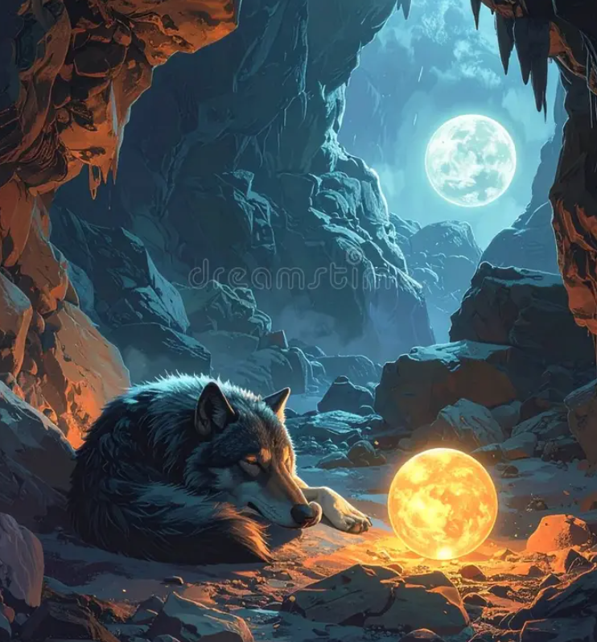

Finally, you gather your courage and enter the cave. What started out as a rather uneventful choice slowly revealed its true face as you head deeper in, a series of tunnels going every way you can think of muddles your mind, making it hard to choose. After sometime you decide to take the leftmost path; it's dark, but not the most difficult path, much to your relief. As you do deeper you see a light at the end only to hear the sound howls and see the figure of a dog in front of you. To your horror you soon see that it's not a dog, but a gaint wolf, baring it's fangs in hunger. You try to turn back and run only to fall in the dark. The sounds of growling and feel of musky breath is upon you...you dare not look,but you know whats about to happen.